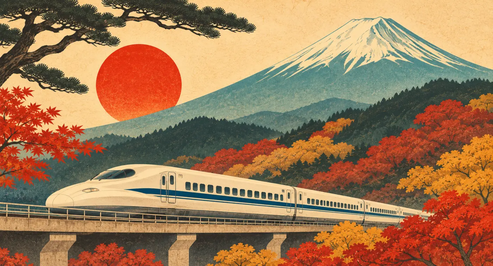

Ticketed flights
- 24 Nov · Manila to Nagoya07:35 PHT → 12:35 JST · 5J 5038
- 28 Nov · Narita to Manila19:00 JST → 23:35 PHT · 5J 5057
24–28 November 2026
A five-day business trip through Nagoya, Tokyo and Narita, from Toyota City to Narita Market.
